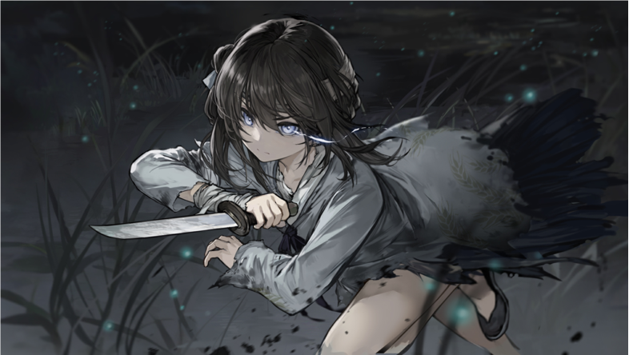
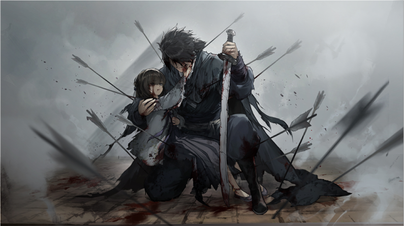

故事起源于一位想要为父报仇的女孩，名
叫满穗，身逢乱世，灾年，为活下去，她经历
了许多令人绝望的事，她也曾想过一死了之，
但是为了找到杀父仇人为父报仇的信念让她坚
持了下去，终于，历经千辛万苦，她如愿找到
了杀父仇人‘良’，并伪装成要被其运输的人，
抓住机会，进行刺杀，却在刺杀的时候失手，
不幸失去了刀具。
而在运输过程中，‘良’知道了他所运输
的人最后将受的酷刑，深受震撼，受到其内心
的良心谴责，与其同伴发生了剧烈的争执，其
同伴不想失去这单大生意，于是便心生杀意，
幸好被满穗及时发现，告知了良，良才能够在
其同伴行刺之前将其反杀，良开始犹豫，不知
道该如何处置这群女孩，但为了安全，还是先
启程。
在途中，良与这四位女孩的关系发生了
微妙的变化，他们好像不再是管理与被管理
的关系，而好似变成了朋友，良也会为了她
们，以一敌多，保护其安全，终于，良心中
的善还是战胜了恶，他决定将其中的三位送
至自己的熟人家中，而至于满穗，则由于其
一直坚称要去洛阳，良决定与其一同前往，
并不断劝其与自己与自己一起南下逃亡。。
在洛阳，经历种种，满穗在看到良的改变
，内心动摇，心中仇恨与不忍交杂，在湖边，
准备跳湖之时，良找到了她，劝其不要自尽，
而此刻，满穗掏出了自己的小刀，抵在良的胸
口处，两人对峙，满穗也告诉了良事情的真相
，而此刻两人的内心都十分复杂，最终，满穗
于心不忍，留了良一命，而良为了弥补满穗，
决定除了造成这乱世的根源--福王。

结局一：在做了充分的准备，把各种可能
的情况考虑过后，满穗和良潜入福王府，并以
皮影戏作为掩护，将刀具藏入其中，二人如愿
以偿，进入了福王府，杀了那如肥猪般的福王
，而他们二人也被福王府的官兵围得水泄不通
，目的已达成，而二人被官兵的乱箭射死。
结局二：良决心加入叛军，跟随闯王，拯
救这个水深火热的乱世，拯救处于水深火热的
人民，而二人也在此相约，待良攻入洛阳，二
人便在此再会。九年后，闯王带领的军队攻入
了洛阳，活煮了福王，而二人也按约再次相逢
，烟雨朦胧中，二人心生情愫。